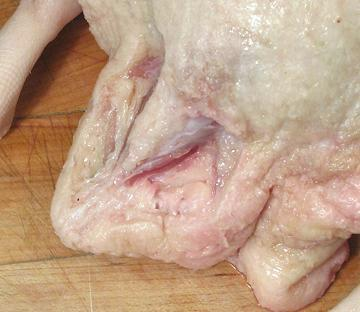

I've read that Chinese gourmets say the most delectible part of a duck is
the tail. Chefs strongly disagree and say to discard the tail. I find that
with the oil glands properly removed the tail is just fine, but there's not
a lot to eat there.
The wishbone on a duck or goose is heavier and positioned differently from that of a chicken or turkey. It is usually removed to give the front of the bird a smoother appearance and to make slicing easier after roasting.
Just push the breast skin back and use a boning knife to
cut around the top and sides, then pull out forward and cut it free at
the ends.